ALMA'S PORTOFOLIO
VELKOMMEN TIL MIN PORTOFOLIO
Dette website er en præsentation af de projekter, jeg har arbejdet med i løbet af mit første semester
på
multimediedesignuddannelsen på KEA. Her kan du følge min udvikling gennem de forskellige temaer, vi
har
arbejdet med på
studiet.
Hvert tema har givet nye indsigter og kompetencer - lige fra grundlæggende kodning og
designprincipper
til
brugeroplevelse, animation og samarbejde med eksterne partnere. Jeg har dokumenteret min proces
undervejs,
så du kan få
et indblik i både mine idéer, de værktøjer jeg har brugt, og de løsninger jeg er kommet frem
til.
Siden giver et overblik over de projekter, jeg har lavet undervejs, og viser, hvordan jeg har
udviklet
mig
fagligt. Du
er velkommen til at kigge rundt og se, hvad jeg har arbejdet med.
TEMA 03 - GRUNDLÆGGENDE UX/UI
UX/UI
I tema 3 har vi arbejdet med UX/UI og lært om brugeroplevelser, prototyping, usability og
testing. Vi
har
anvendt en
række metoder og værktøjer i designprocessen, herunder desk research, inspirationssøgning,
idéudvikling,
mindmapping,
brainstorming, sketching, moodboards, wireframes og style tiles.
Vi har desuden observeret brugere for
at indsamle data
til vores egne projektwebsider. Som opgave skulle vi skabe et emnesite, hvor vi frit kunne vælge
emne. I
den forbindelse
arbejdede vi i Figma med wireframes og style tiles, og vi brugte billedbehandlingsværktøjer som
Squooosh
til at redigere
og optimere billeder.
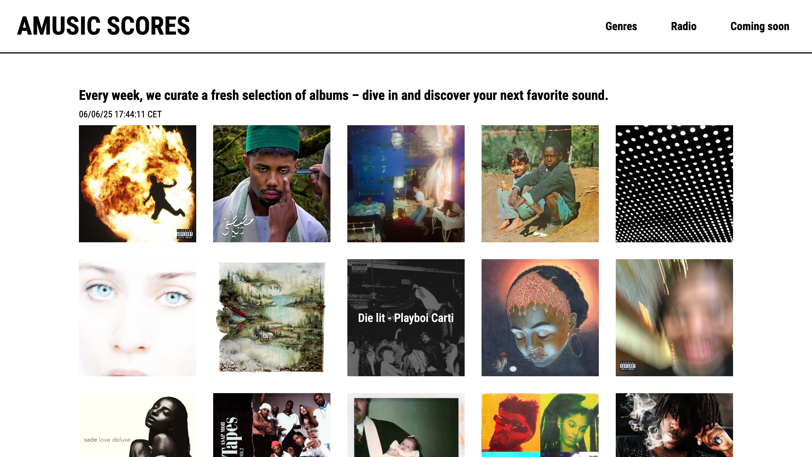
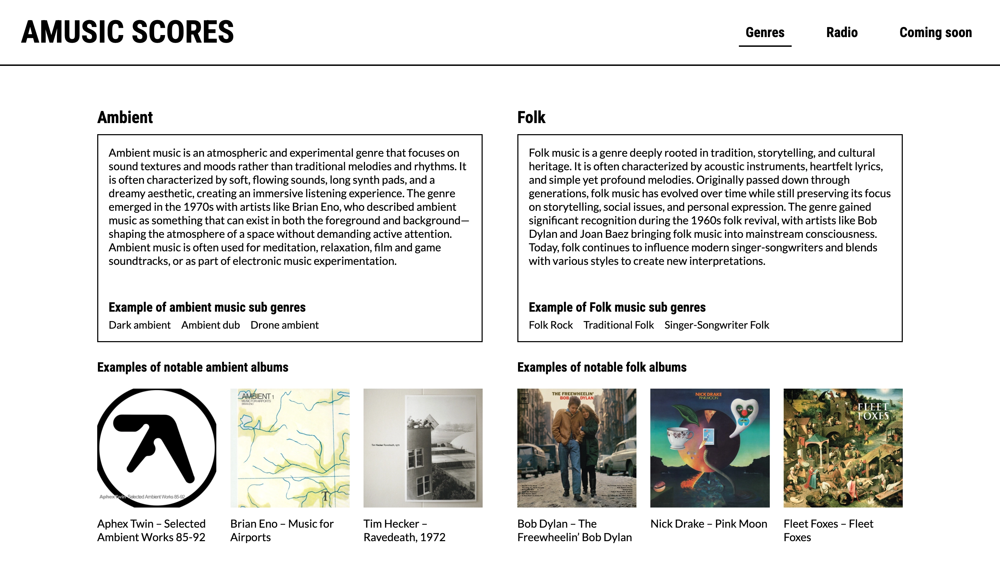
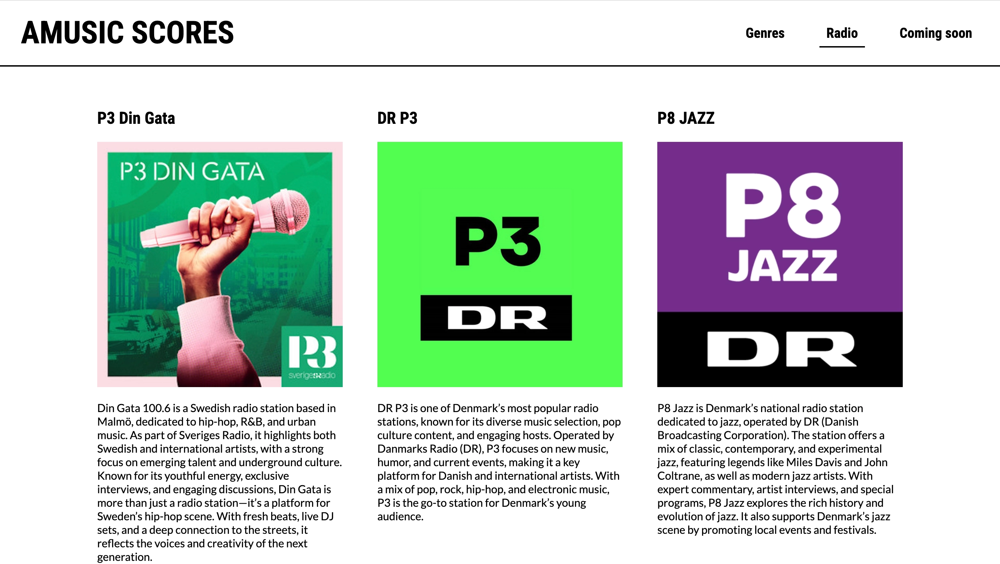
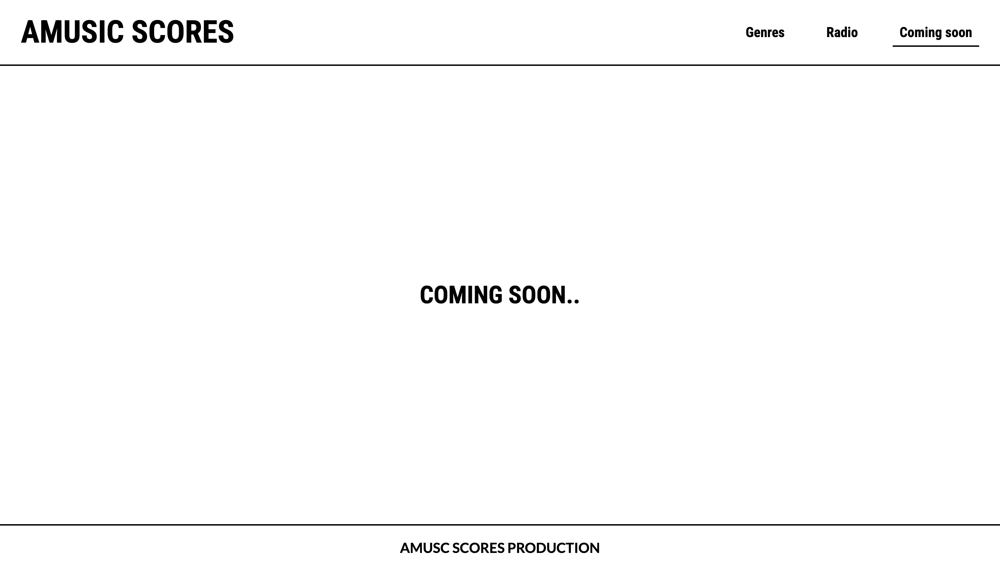
DOKUMENTATION
Jeg har udviklet et website ved hjælp af HTML, CSS og JavaScript baseret på en digital prototype, som jeg har testet med metoder som tænke-højt-test og 5-sekunders-test. Undervejs har jeg dokumenteret design- og udviklingsprocessen, da en del af opgaven var at vise, hvordan idéer blev omsat til konkrete løsninger. Til det formål har jeg udarbejdet en procesdokumentation samt en præsentation, der gennemgår de vigtigste trin i forløbet.
SE SITETTEMA 04 - GRUNDLÆGGENDE ANIMATION
DESIGN AF SPIL
I tema 4 har vi arbejdet med grundlæggende animation og UI-design, hvor vi blev introduceret til
formgivnings- og
kompositionsprincipper i forbindelse med design af spil- og UI-elementer. Vi lærte at anvende
skitserings- og
idéudviklingsteknikker, og vi arbejdede med frontend-teknologier som Adobe Illustrator, CSS og
JavaScript. Vi lærte
blandt andet om funktioner, variabler og events i JavaScript samt CSS-positionering og
animationer - herunder hvordan
man bruger @keyframes til at skabe bevægelse og liv i elementer. Gennem kreative øvelser som
papirprototyper og
håndtegnede figurer udviklede jeg mit eget spil, Fairy Rescue, hvor jeg skabte alle elementer
fra bunden.
Prøv spillet herunder!
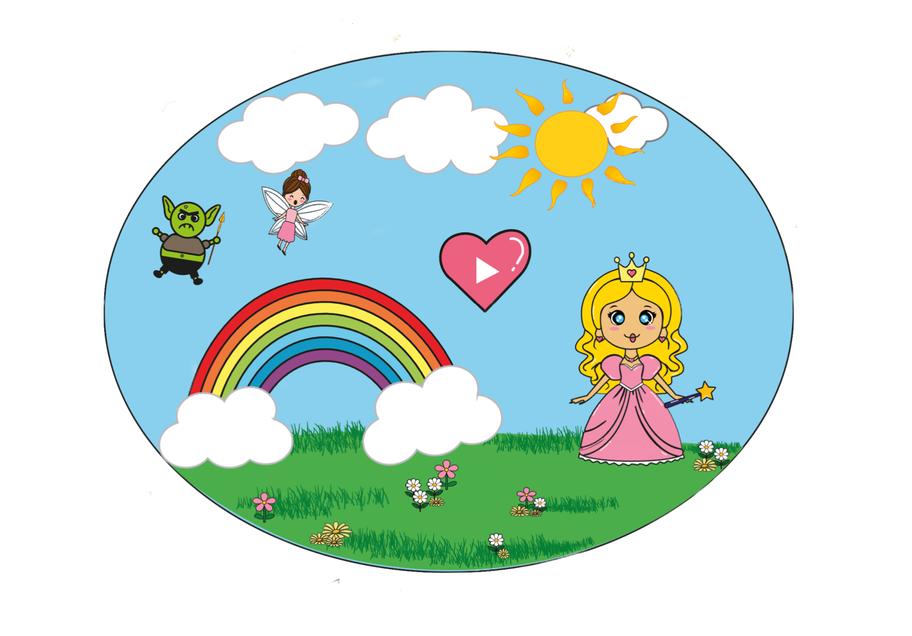
TEMA 05 - GRUNDLÆGGENDE INDHOLD
REDESIGN AF HJEMMESIDE
I tema 5, Grundlæggende indhold, blev vi introduceret til centrale værktøjer som Git, GitHub og
Scrum,
som vi brugte i
kombination med Trello til at planlægge og styre vores projektforløb. Hovedopgaven bestod i at
foreslå
et redesign af en
virksomheds eksisterende website. Dette krævede grundig research af den nuværende løsning med
fokus
på
struktur og
brugeroplevelse. På baggrund af analysen udviklede vi wireframes og et style tile, der
formidlede
den
ønskede visuelle
identitet, samt en digital prototype i Figma.
Vi arbejdede i teams og brugte et fælles GitHub-repository til at samarbejde om kodningen - her
kunne
vi
løbende push'e
og pull'e kode, så hele gruppen havde adgang til den nyeste version. Gennem forløbet fik vi
praktisk
erfaring med at
omsætte teori til praksis fra idéudvikling og samarbejde til teknisk udførelse og præsentation
af
vores løsning.
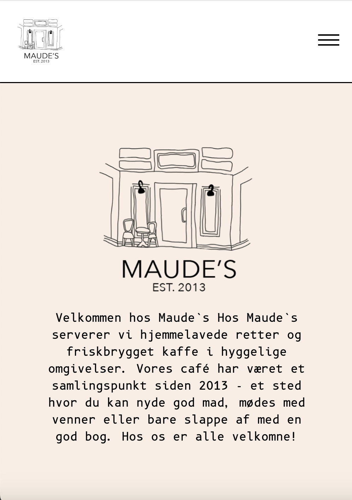
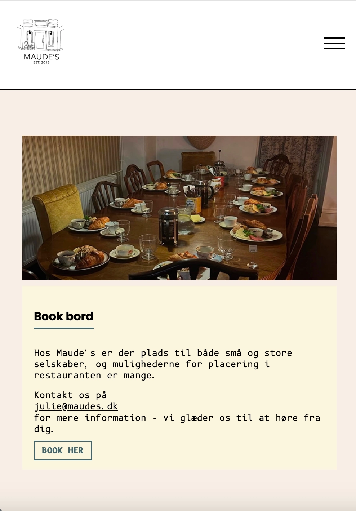
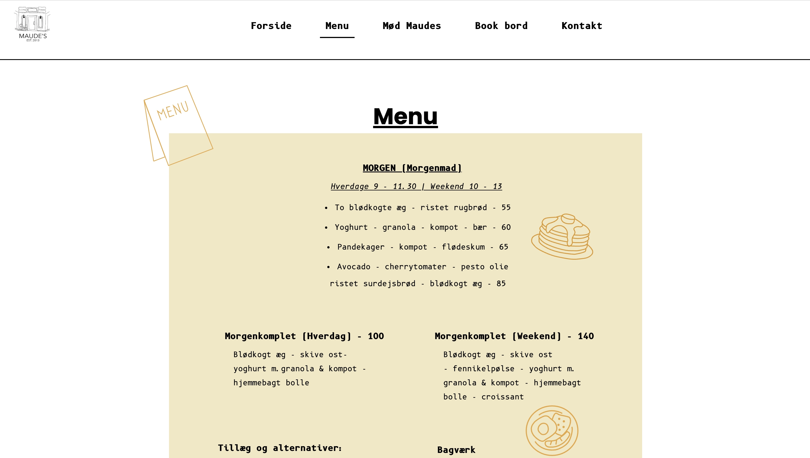
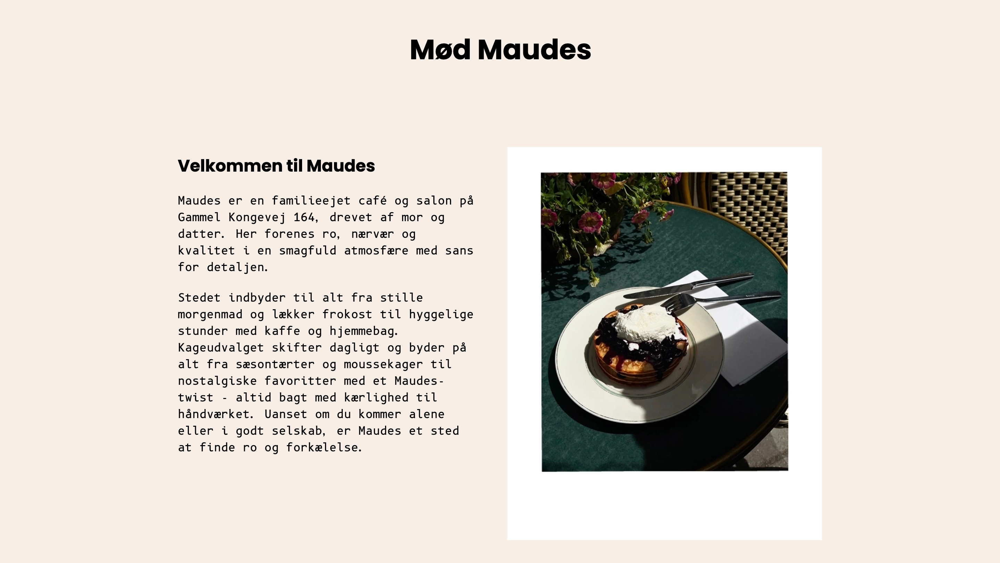
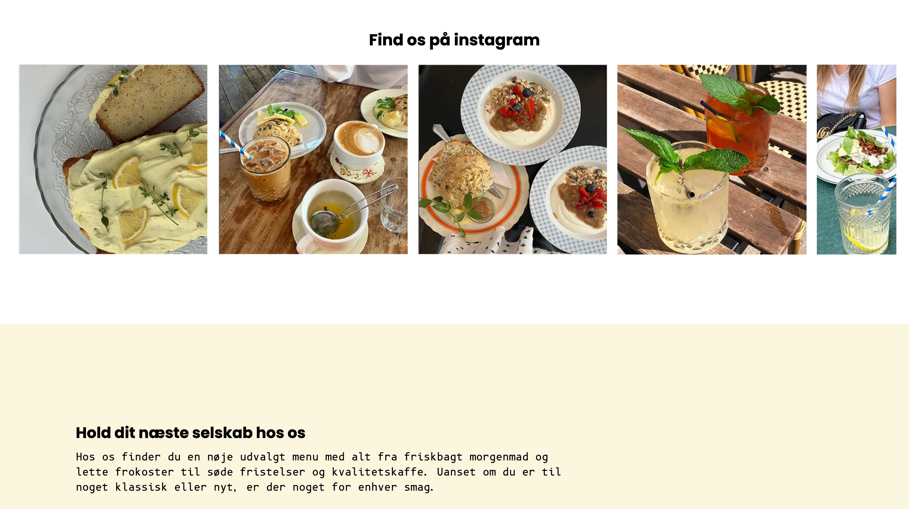
TEMA 09 - 2. SEMESTER EKSAMEN
2. SEMESTER EKSAMEN
I 2. semester arbejdede vi med et eksamensprojekt, hvor vi designede og udviklede et website for
caféen Arabica med
fokus på identitet, fællesskab og brugeroplevelse.
Vi fulgte Double Diamond-modellen og arbejdede med research, målgruppeanalyse, personas,
wireframes og en interaktiv
prototype i Figma. Den endelige løsning blev kodet i HTML, CSS og JavaScript, og vi brugte Git
og GitHub til samarbejde.
Derudover udviklede vi en SoMe-strategi målrettet målgruppen.
Gennem forløbet har jeg opnået en stærk forståelse for brugercentreret design og samspillet
mellem UX/UI, udvikling og
digital strategi.
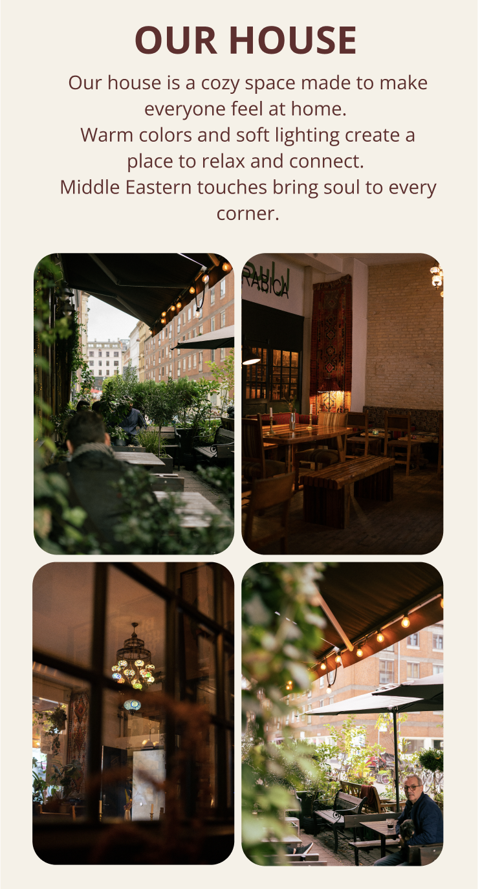
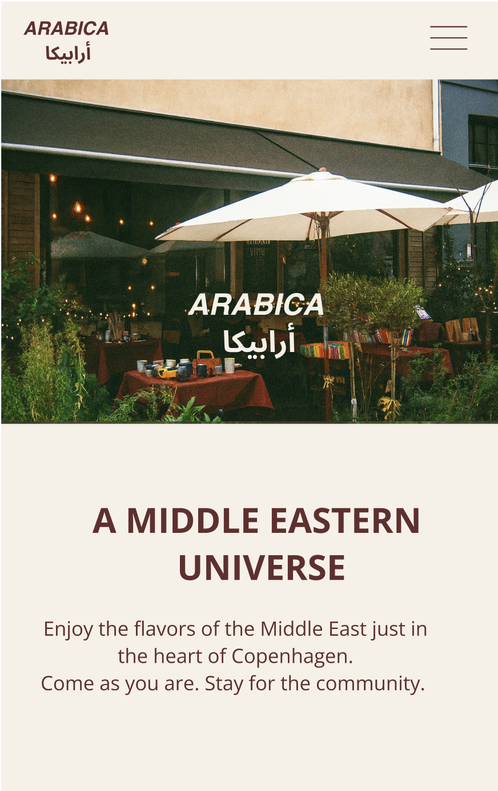
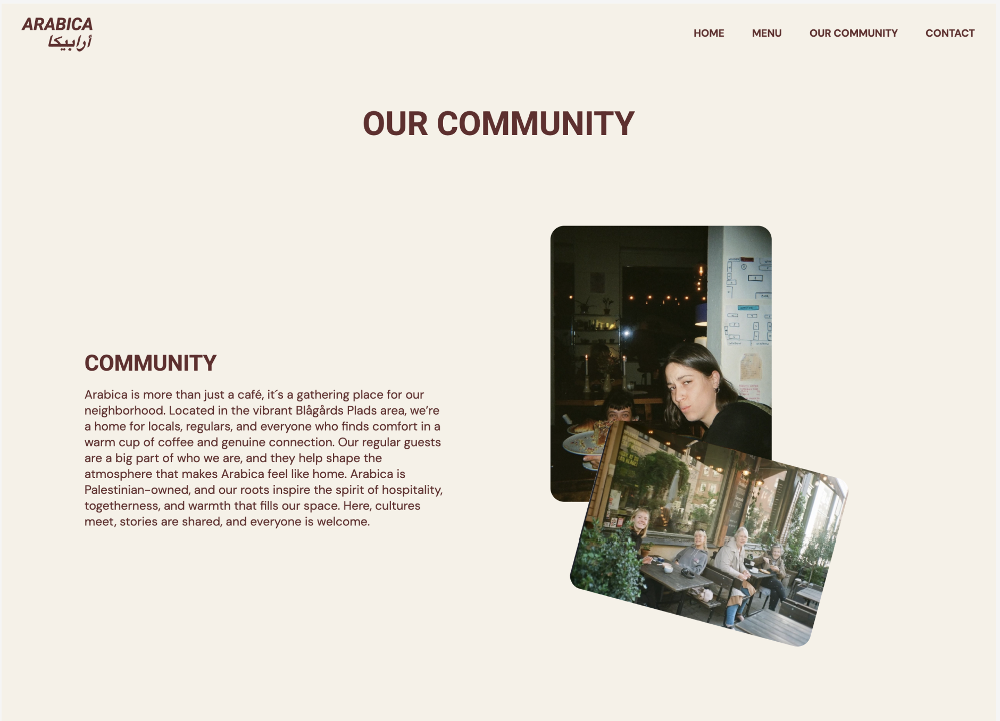
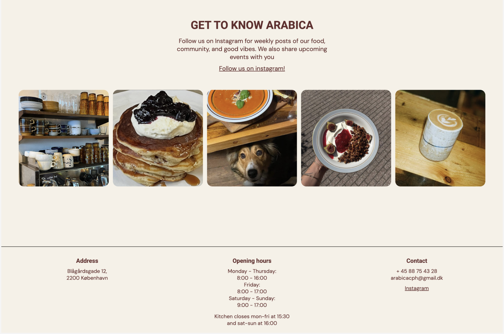